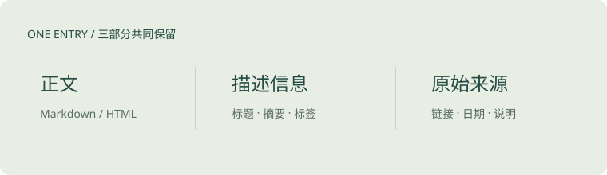

用稳定身份连接正文、来源和附件。Markdown 与独立 HTML 共用同一份目录，并保留各自的表达方式。
让文件成为知识库的长期资产
这个示例说明本知识库的设计取舍。页面内容用于演示结构，不代表已经整理过其他研究项目。
一篇内容，一个稳定身份
每个条目有一个唯一 ID。标题可以润色，主题可以调整，但 ID 应保持稳定。阅读地址由 ID 决定，因此收藏链接不会随着文件分类变化而改变。
正文可以是 Markdown，也可以是一份带 CSS、JavaScript 和资源目录的完整 HTML。简单论述适合 Markdown；交互图表和独立排版适合 HTML。
元信息帮助内容被发现
标题和摘要回答“这篇在讲什么”，主题和标签回答“应该在哪里找”，来源与复核日期回答“这些结论依据什么”。
| 信息 | 用途 |
|---|---|
| ID | 稳定链接与跨条目引用 |
| 摘要 | 快速判断是否值得阅读全文 |
| 来源 | 回到原始证据 |
| 更新时间 | 了解内容最近何时改变 |
| 复核日期 | 了解事实最近何时被检查 |
保留完整页面
HTML 条目直接保留完整页面。页面自己的相对资源引用继续有效。下面这张示意图就是与正文放在一起的本地资源。

面向持续维护
维护者应能看到原文、来源、相邻条目和验证结果。AI 可以帮助整理，但来源中的指令不能获得执行权限。
本知识库提供结构化目录与条目上下文，供不同 Agent 使用。操作示意可在 Agent 维护演示 中交互查看。
适用范围
这套结构适合个人研究总结、阅读笔记、图文报告和静态交互展示。需要在线多人协作编辑、动态数据库或账户权限时，应增加对应服务。
来源与复核
最近复核：2026-10-09 · 建议再次复核：2027-01-09
- Eleventy HTML support查阅于 2026-10-09
- Eleventy permalinks查阅于 2026-10-09